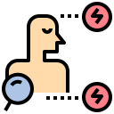

Apa itu Flourosis ?

Pengertian
Fluorosis gigi merupakan suatu kelainan pada struktur enamel gigi yang diakibatkan oleh asupan flour berlebih selama periode pembentukan gigi (Mariati,2015)

Gejala Fluorosis
Fluorosis ditandai dengan adanya (Schuurs, 1992; Gartika, Sasmita, dan Muharam, 2006; Malau 2009)
- Perubahan Warna Gigi menjadi tidak putih kembali seperti gigi sehat
- Terdapat noda-noda kecoklatan atau bintik-bintik kuning yang tersebar pada permukaan gigi atau disebut mottled enamel